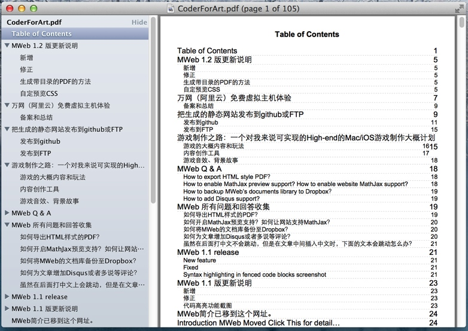
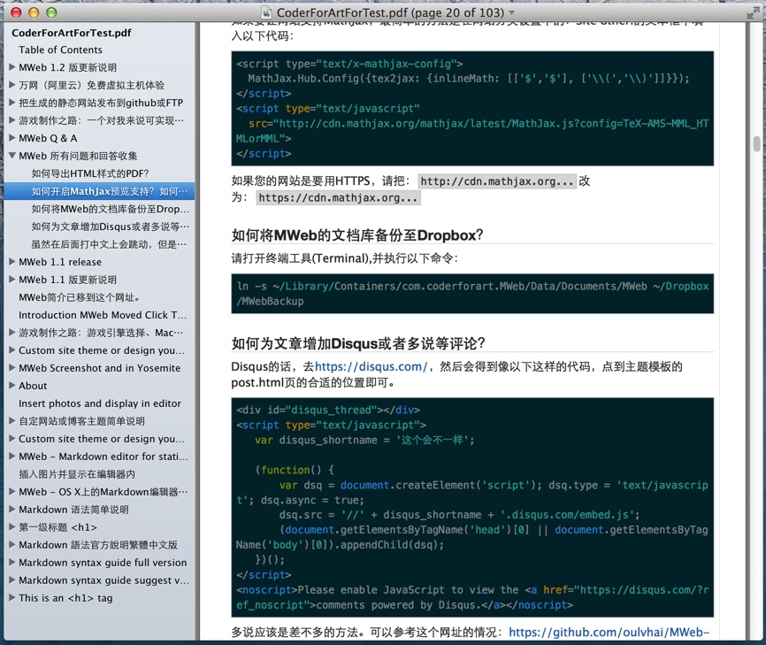
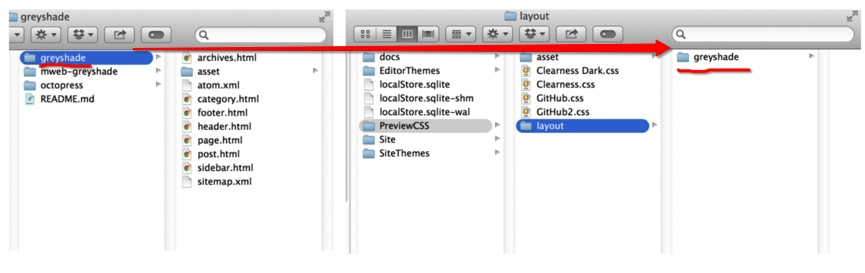
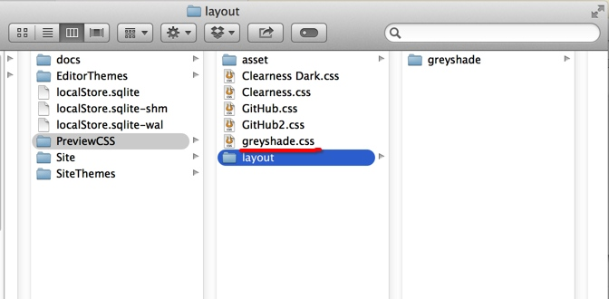

MWeb 1.2 版更新说明和用 wkhtmltopdf 生成带目录的 PDF 和自定预览 CSS
新增
- 可选择在输入时是否自动插入列表编号，可以在 Preferences --> General --> Auto insert list and blockquote prefix 开启和关闭。
- 分享功能的 Copy as image、Save as image、Save as PDF 等现在统一都用HTML的样式了，另外还专门为分享到微薄等SNS生成的图片做了优化，比如说如果有代码，会强制换行。
- 新增把文档库里的单个或多个文档导出为HTML或者PDF。使用方法为：选择要导出的文档（可多选） --> 鼠标右键 --> Export as HTML、PDF
- 新增把整个分类导出为HTML或者PDF。使用方法为：右键要导出的分类 --> Export as HTML、PDF。导出的PDF现在还没办法自动生成目录，下边的详细介绍会分享一个可以自动生成目录的方法，然后个人觉得生成的PDF非常好。
- 新增MWeb自带的两个主题octopress、greyshade的即时预览CSS。现在可以不用 Build site 就可以即时预览文章的大概效果了。另外自定网站的预览CSS非常简单，请看下边的详细介绍。
- 新增可以拖拽改变文档的顺序。使用方法为：鼠标右键父分类 --> Edit --> 把Order by设定为：Custom --> 然后就可以用拖拽调节这个父分类下的文档顺序了。
- 新增可以拖拽改变分类的顺序。
修正
- Build site 闪退问题，这也是这次版本发布的原因。
- Preview site 无效果问题。
- 编辑器小修正。
生成带目录的PDF的方法
先安装wkhtmltopdf，网址：http://wkhtmltopdf.org/。
然后用Export as HTML把要生成带目录的PDF的内容导出为HTML。我这里是选择整个Coder For Art网站。如图是导出到tocPDF文件夹下的情况。
 

选择tocPDF文件夹，并CMD+C复制,打开终端工具(Terminal)，打cd （注意cd后带一空格），然后CMD+V，再 Enter。
然后再执行以下命令
wkhtmltopdf toc index.html CoderForArt.pdf
执行结果生成的PDF如图：

一般情况下有代码的地方如果过长会被切掉，可以加入以下CSS
.hljs{overflow: visible; word-wrap: break-word;}
就不会被切了。如图：

自定预览CSS
把要自定的预览的网站的主题整个文件夹复制到预览CSS文件夹的layout文件夹下，如图是我要自定greyshade主题的预览CSS：

然后只留下layout/greyshade文件夹下的asset文件夹和随便两个.html文件，其他都删除。把留下的两个.html文件分别改名为：demo.html和index.html。
使用Build site --> Preview site --> 转到任何一个单独的文章页面 --> 查看原代码 --> 复制并把它粘贴到demo.html上。现在你可以直接打开demo.html看效果了。调整demo.html到合适的预览效果时，再把demo.html的所有内容粘贴到index.html上。
把index.html页的标题都用{{title}}替换，内容用{{content}}替换，并在<head></head>之间加上{{head}}，一般加在</head>前面即可。
如图，在预览CSS的文件夹里新增一个名为greyshade.css的内容为空的文件即可。

要注意的是：greyshade.css的文件名greyshade和layout文件夹下的greyshade文件夹的名称是一样的。然后如果你引用的CSS加有media="screen, projection"这样的限定，请删除，不然MWeb在导出PDF功能上会没有样式。还有如果你在用highlightjs这个代码高亮插件，导出PDF或者生成图片时，代码被切掉的话，可以用以下CSS强制换行：
.hljs{overflow: visible; word-wrap: break-word;}